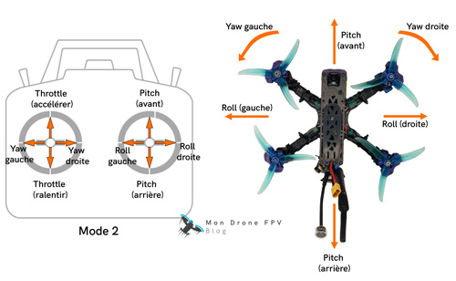

Aéronef sans pilote qui est propulsé par quatre moteurs électriques
Possède un chassis, des moteurs (sans balais/brushless), Controleur de vol, Batterie/ESC
Controleur de vol : GPS, capteurs intertiels (gyroscope/accéléromètre), algorithme/controleur PID
PID (proportionnel, integral, derivatif) : controle altitude, maintient horizontal, orientation (angle du drone)
DDL 6 : avant-arrière, gauche-droite, haut-bas, roulis, tangage (avant-arrière), lacet
Utilisation pertinente seulement
....